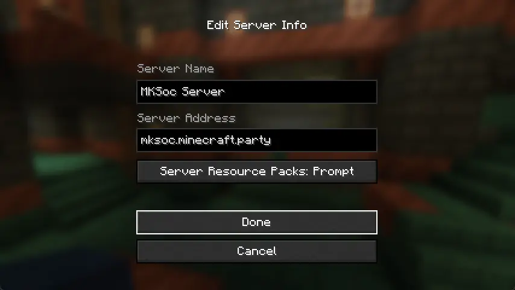
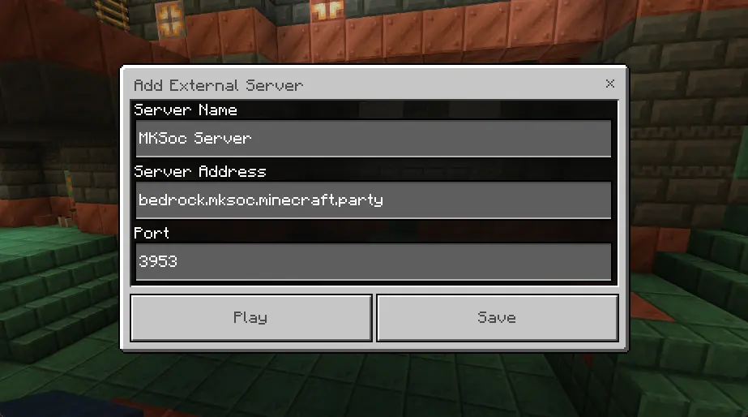

MKSoc Minecraft Server
Information about the Mario Kart SOC Minecraft Server
Minecraft version: 1.20.4 (Java) / 1.20.72 (Bedrock)
IP Address (Java): mksoc.minecraft.party
Port: 25565 (default)
IP Address (Bedrock): bedrock.mksoc.minecraft.party
Port: 3953
Max Render distance: 26 Chunks
Simulation Distance: 16 Chunks
Difficulty: Hard


#Changelog
-
2024-04-03 Fixed the nether roof for bedrock players,
render distance, simulation distance
and entity range have been increased
-
2024-03-25 Bedrock players can now via bedrock.mksoc.minecraft.party (port: 3953)
-
2024-03-24 A new domain for the server is in use - mksoc.minecraft.party
-
2024-03-23 Server testing!
#Mods
Below are the minecraft mods I use for a 1.20.4
Fabric Minecraft instance.
I use PrismLauncher
to manage instances and download mods, but a normal Fabric loader instance
(launched from the regular Minecraft launcher) will work fine (as long as you know
where the place mods manually).
For either the launcher, or a standalone
fabric loader instance,
you will need Java (version 17) installed on your computer, which you
can find here:
https://adoptium.net/en-GB/temurin/releases/?version=17
Note: On Macs with Intel processors, you need to install the x64 version
of Java, on Macs with Arm 64 (M1) processors, you need to install the
Arm 64 (aarch64) version of Java.
#Mod List
These mods mainly focus on optimisation (improving game FPS) and
quality of life (qol) features.
Mods in (brackets) are API mods
that are required for other mods to work.
This mod list may be updated from time to time, please check back occasionally!
#Downloading Mods
These mods can be downloaded from
https://modrinth.com/. Or
alternatively by importing the mod pack into your favourite
launcher (like PrismLauncher).
#Modpack Template
The modpack template can be downloaded here:
1.20.4 Optimised.mrpack v1.0.1.
View previous versions
To import it into PrismLauncher, select 'Add Instance/Create Instance',
then choose the 'Import' tab and click 'Browse'.

Locate the '1.20.4 Optimised.mrpack' file and open it. Then press 'OK' and the
correct mods will be downloaded!

Make sure to select 'Modrinth pack (*.mrpack)' in the dialogue
for the file to appear.
The instance is now ready to play!
Note: You may get an error about 'Java version incompatibility',
skipping the check normally solves this issue.
#Mod Configs
My mods config folder: config.zip.
This file has configuration files for the above mods. Use this
if you downloaded mods manually. Extract the contents of this
folder to your Minecraft directory, within the 'config' folder.
#options.txt
Here is my options.txt file.